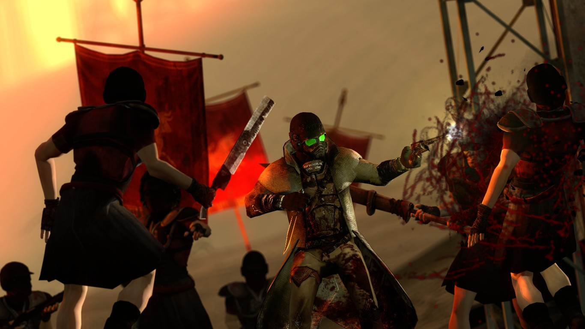

One of the more significant factions in Fallout: New Vegas vying for control over Hoover Dam and the territory is Caesar's Legion. Edward Sallow, otherwise known as Caesar, leads Caesar's Legion and his goal is to emulate ancient Rome's empire run by Julius Caesar in an attempt to conquer the Mojave wasteland. Formerly a pacifist, Caesar found two books on ancient Rome while studying modern tribal life, The History of the Decline and Fall of the Roman Empire by Edward Gibbon and Commentarii de Bello Gallico by Julius Caesar. After reading the two books, he sought to unite the tribes under one flag to fix their abhorrent conditions. Caesar's knowledge of the Roman military and its hierarchy came from Commentarii de Bello Gallico. The book inspects a third-person view of Julius Caesar conquering Gaul. Caesar's knowledge of how to properly run his empire without making the same mistakes is from his knowledge of The History of the Decline and Fall of the Roman Empire. This novel states several issues that Rome faced in its fall, including the issues revolving around barbarians invading the empire.
Caesar read these books to structure his new empire. He conquered tribes and absorbed them into his military ranks, wiping their identities, not making the same mistake that Rome did when they conquered new territories; when Rome conquered territories, they allowed freedom of religion and governing practice and often assimilated conquered religions into their own, such as when they conquered Greece. Apart from these less obvious facts, Caesar's Legion also practices crucifixions, a staple form of punishment refined by the Romans. Other than Caesar's Legion, the New California Republic is similar to the United States government during and post World War II, and many of the posters surrounding their encampments and territories are similar to the propaganda used by the United States in World War II.
Edward Sallow
New California Republic Propaganda
Caesar's Legion Crucifixion